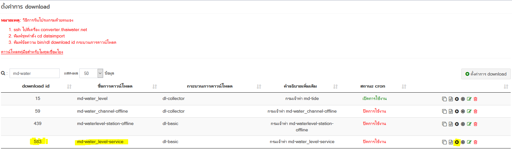

เชื่อมโยงข้อมูล webservice ระดับน้ำรสม. กรมเจ้าท่า
webservice :
http://log.ddnsthai.com/MD/Api/MD/GetAll
ตัวอย่างข้อมูลจาก webservice

md api document
- เพิ่ม folder, file driver เพื่อ download ข้อมูลจาก webservice
haii.or.th\dataimport\downloader\driver\md_waterlevel\driver.go

ในไฟล์ driver กรณีรัน manual หากต้องการให้แสดงข้อความเพื่อตรวจสอบโปรแกรม ให้ใส่ข้อความในคำสั่ง
dl.Logger.UpdateStatus(text) เช่น
เพื่อต้องการให้แสดง url ที่ได้จากการ set download

- เมื่อเขียน driver เสร็จแล้ว ให้แก้ไขไฟล์
haii.or.th\dataimport\downloader\connector.go
เพื่อเพิ่ม driver
Line 61 var knownConnectionType = map[string]NewConnectionFn{ "mdwaterlevel": md_waterlevel.NewConnector, }
ตัวอย่างการเพิ่ม connector
"mdwaterlevel": md_waterlevel.NewConnector,
| key | connnector |
|---|---|
| "mdwaterlevel" | md_waterlevel.NewConnector, |
*key ตัวเล็กหมด ติดกันเท่านั้น ห้ามมีอักขระพิเศษ
- update บน server converter
Server : converter cd go_local/src/haii.or.th/dataimport make pull install
- เพิ่ม driver type ใน table เพื่อให้ backoffice สามารถมองเห็นใน dropdown
ชื่อ driver table : api.system_settiing Id 66 bof.DataIntegration.dl.DownloadType { "text": "md_waterlevel://", "value": "mdwaterlevel://" }
*ต้องใส่เหมือนกับที่กำหนดไว้ในไฟล์
haii.or.th\dataimport\downloader\connector.go
var knownConnectionType = map[string]NewConnectionFn{ "mdwaterlevel": md_waterlevel.NewConnector, }

*พอทำ download เสร็จแล้ว ปุ่มรันใน download จะยังไม่ขึ้นต้องไปทำ dataset ก่อน
- ตั้งค่า download ใน backoffice เมนูเชื่อมโยงข้อมูล->ตั้งค่าการ download


- ไปที่ตั้งค่า dataset เพื่อทำการ convert and import data ใน backoffice เมนูเชื่อมโยงข้อมูล->ตั้งค่า dataset
รูปแบบข้อมูล
การตั้งค่า dataset
การ mapping ชื่อ กับ dataset

*ชื่อ tag ข้อมูลที่ต้องการอ่านค่า : /
ชื่อ tag ข้อมูลที่ต้องการอ่านค่า ใช้ในการอ่านค่า tag ของ input file กรณีที่เป็น xml หรือ json หากไม่มีชื่อ tag เริ่มต้น เช่น ตัวอย่าง json ที่ได้จากเซอร์วิสของ สสนก. ให้ระบุ /
ตัวอย่างข้อมูล JSON

-
เมือใส่ dataset เสร็จแล้ว กด รันเพื่อสั่งให้โปรแกรมทำงานที่เมนุ download
 -
ดู log การ download convert import ที่
View api.v_dataset_log_download_log โดยใส่เงื่อนไข id download ที่สร้างขึ้น select * from v_dataset_log_download_log WHERE api.v_dataset_log_download_log.dataimport_download_id = 583 and date >= '2018-03-18' ORDER BY date
หาต้องการทดสอบการันแบบ manual server : converter
cd dataimport #คำสั่งจะทำทั้ง download convert import #bin/rdl {download_id} dl-basic bin/rdl 583 dl-basic
สิ่งที่ต้องทำต่อ
*การ map ตำบล อำเภอ จังหวัด เพื่อเปลี่ยนเป็น geocode ปัจจุบัน 2018-03-29 เมื่อไม่สามารถ mapping ตำบล อำเภอ จังหวัด เพื่อเปลี่ยนเป็น geocode ได้ ระบบจะไม่นำข้อมูล record นั้นเข้าฐานข้อมูล ต้องเขียน custom function เพิ่ม
ปัญหาที่พบ
- error field : download_detail
{"error":"EVENT_CODE_ID(21) unsupport connection scheme [md-waterlevel]","result":[{"name":"md-water_level","file_count":0,"byte_count":0,"error":{},"details":null}]} สาเหตุ driver ที่เขียนไว้ คือ md_waterlevel แต่ใน config เป็น md-waterlevel และ
*driver ที่ระบุใน connector ต้องเป็นตัวเล็กหมด ติดกันเท่านั้น ห้ามมีอักขระพิเศษ mdwaterlevel
- error field : convert_result
{"error":"EVENT_CODE_ID(3) tele_station_id can not parse parameter of field transformer 'mapping' ... lookup table 'm_tele_station' ... server return: 500 Internal Server Error ...The server encountered an internal error. Please retry the request. ...pq: column \"codestation\" does not exist"} สาเหตุ mapping dataset field codestation ผิด

ชื่อฟิลดิ์ input สำหรับการ convert : tag ใน json ที่ download มา
ชื่อฟิลดิ์ที่ใช้ตรวจสอบข้อมูล input : ชื่อ field ในฐานข้อมูล ที่จะเอาข้อมูลใน tag json ไปใส่
- error field : convert_result
DatetimeServer":"2018-03-22 14:55:00" waterlevel_datetime:invalid date/time '' ... requires %Y-%m-%d %H:%M:%S" สาเหตุ พบข้อมูล json ที่ download มา มีช่องวางอยู่ในเนื้อข้อมูล